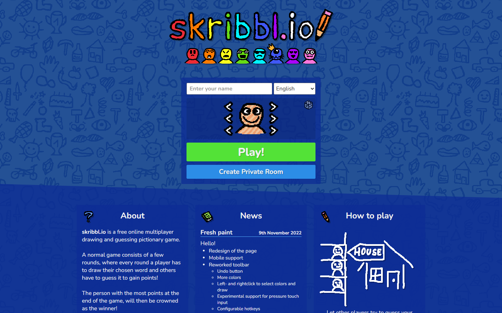
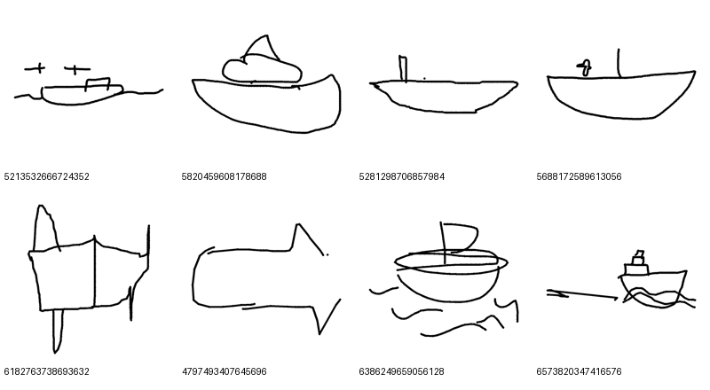
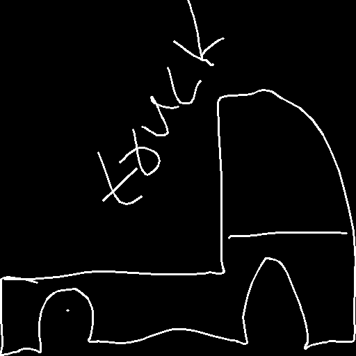
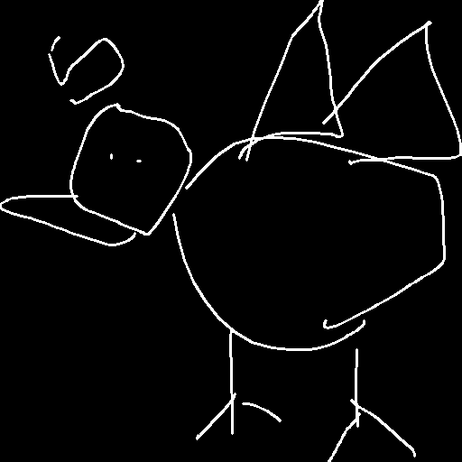
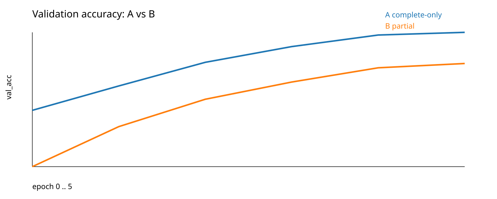
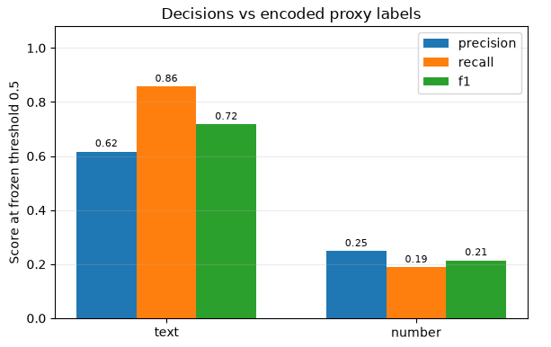

More Than
Meets the AI
Can you guess the drawing
before the AI?
skribbl.io
One person draws a secret word.
Everyone else races to guess it.
Then the next player draws.

A rival.
A second pair of eyes.
The Guesser
Recognizes the drawing
while humans are guessing.
The Referee
Flags possible written clues.
Players decide what is fair.
Writing on a clock or sign can belong in the drawing.
Quick, Draw!
345 categories.
Real human sketches,
stored as timed strokes.
Timing lets us reconstruct an unfinished drawing.

ATYPICT
/ DrawMon
Pictionary sketches
with atypical content.
We use evidence of text and numbers.


Strokes become
model inputs
- Clean + sampleDeterministic selection
- Split originalsTrain / validation / test
- Render viewsFull or timed partials
- PreprocessCrop, pad, 224 × 224
One original, one split. Its partial views stay together to prevent leakage.
We needed less data
per experiment
500 originals / class
2,000 originals / class
5,000 originals / class
Keep all 345 categories. Reduce examples to iterate sooner.
Prepared totals across splits. Profiles use different source samples.
Train for the moment
the game needs
Pretrained ViT-Tiny + a 345-class head
A / Complete drawings
Learn from finished sketches.
B / Partial drawings
20% full, 80% random cuts
between 10% and 90% of time.
Matched initial weights and training budget / AdamW / validation checkpoint selection
Learn the evidence
- DecodeImages + annotations
- Build labelsText / number presence
- Fine-tune ViTWriting evidence
- EvaluatePrecision, recall, F1
Four dataset labels: text, number, symbol, circle.
Our Referee focuses on text and numbers to flag possible written clues.
The background
changed the prediction
White on black
Black on white
text score on a white blank
in a deployed-model probe
Inspect the pixels entering the model, including a blank canvas.
Normalize first.
Check blanks explicitly.
Preprocessing repair
Canonical foreground inputs
across either polarity.
Blank handling
Uniform canvases return blank
before writing classification.
Verified in preprocessing checks. Corrected production retraining remains pending.
Completed sketches:
validation accuracy

A / Completeloss
B / Partialloss
Best training-validation accuracy checkpoints, reported epoch 5. Complete-drawing views only.
These figures do not establish recognition during drawing or held-out test performance.
Text detection
is stronger than numbers

TEXT F1
NUMBER F1
Held-out evaluation against encoded proxy labels / frozen threshold 0.5
Historical model results. Real-game warning accuracy and repaired-model gains remain unverified.